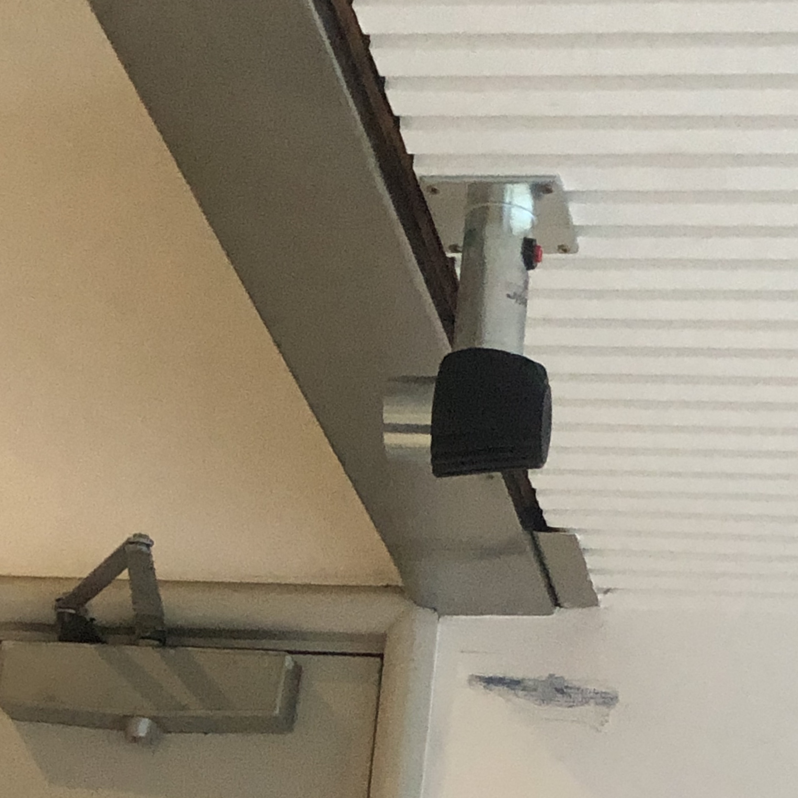

Emily Morris 2020
"Infrastructure" refers to the physical and organisational structures and components needed for the operation of a society, system or enterprise. Therefore, "Internet Infrastructure" refers to components that help make the internet work, and therefore things that allow users to connect to and interact with the internet. This web page explores some of the most common structures in Wellington city that help make up the physical aspect of the internet; things we see everyday in real life but never take the time to appreciate.
Wellington's MetLink real-time bus stop timetables are a staple of life for many Wellingtonians. They work by recieving a mixture of GPS and web-based information, and collate and display that information to commuters who rely on it all hours of the day. You can find them all around the city, primarily at the busisest stops.
There are many CCTV (closed-cicruit television) cameras installed around Wellington city, some run and monitored y the city itself, and some private ones installed by businesses and landlords. Security is the primary goal of CCTV cameras; they send information to different internet-based networks as they monitor our every move.
Unlike many modern cities, Wellington still has above-ground powerlines and cables that supply electricity, internet access and phone lines to buildings, always increasing our interconnectivity with both each other and the internet.
One of the more common wifi access points you'll find around Wellington city are the Spark Wifi boxes, which also often double as telephone boxes. They allow Spark customers to access up to 1GB of internet access per day. You can also find wifi antennae on top of buildings which are connected to a wider wifi network, such as the University wifi.
There are hundreds of manholes of all different shapes and sizes scattered over the city's roads and footpaths, yet I didn't realise how many there actually were unntil I went out and looked for them. Specific manholes provide internet companies access to the many cables below street level, which help provide internet access (amoung other things) to many buildings and businesses around the city.